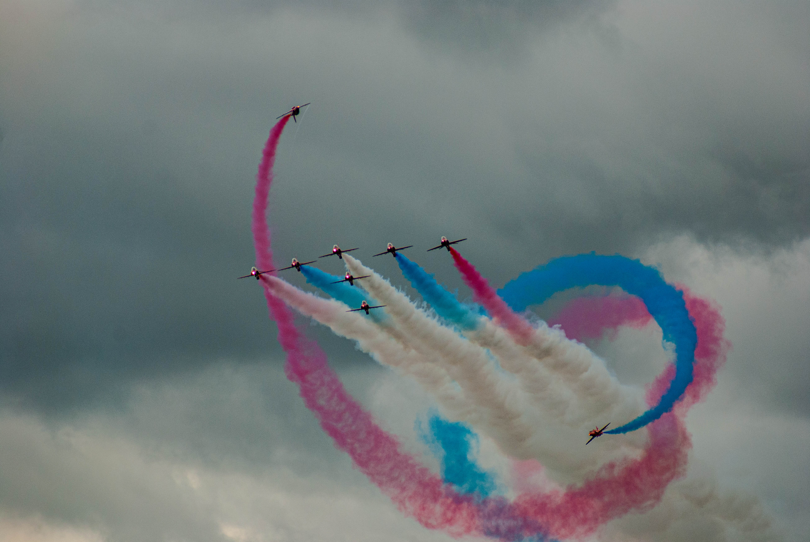

About Me
I'm Rafe Neighbour. Im into photography, guitar, and studying computing at college. I enjoy capturing everyday moments with my camera and sharing them on Instagram. Playing guitar is a way for me to relax and be creative alongside photography. Right now, Im learning computing to develop practical skills that I hope to combine with my creative interests. Motorsport, especially Formula 1, is a big passion of mine. Im fascinated by how technology and performance come together in F1, and Id like to work in the IT side of a Formula 1 team someday. I like creating and sharing things I care about—whether thats photos, music, or tech—and connecting with people who have similar interests.
GCSE Results
These are my GCSE results at John Port Spencer Academy
| English | Maths | Science | IT | Geography |
|---|---|---|---|---|
| 5 | 5 | 5 | 5 | 6 |
Formula 1 Aspiration
One day, I hope to pursue a career with a Formula 1 team — particularly with Aston Martin Aramco Formula One Team, where a family member is already a valued team member.
I'm passionate about motorsports, both as a devoted fan and a participant, and I'm eager to combine that passion with my strong interest in information technology.
Securing a role within the IT department of a Formula 1 team is a key career objective for me, as I believe this is where cutting-edge technology and high performance come together.
I'm excited by the opportunity to contribute to the team’s ongoing quest for competitiveness, employing my technical skills and enthusiasm for innovation to make a measurable, positive impact.